原文连接:https://www.cnblogs.com/lixinjie/p/taste-spring-013.html
在bean的实例化过程中，也会用到一系列的相关注解。
如@PostConstruct和@PreDestroy用来标记初始化和销毁方法。
平常更多的是侧重于应用，很少会有人去了解它背后发生的事情。
今天就来看下它们的源码，这样它们对你来说就不再是黑盒子了，而且学习源码对每个技术人来说都是必经之路。
人们对事物的认知以及自己的做法，往往分为三个阶段：
1）最初看一个事物，非常复杂，简直没有一点头绪，此时很多人就会放弃。
2）过了一段时间后，发现整体来看没有想象中的那么难，此时很多人以为自己已经get到了，然后就停止不前。
3）随着了解的深入，发现很多细节的处理，很多方方面面的考虑是自己无法想到的，此时才会有一点点的东西转化为你的智慧，永远的属于你。只可惜能够到达这一步的人已经凤毛麟角了。
因此能够到达第3步的人就已经很少了，如果你恰巧到达了，那么需要做的就只剩下坚持了。
坚持了足够的时间之后，你付出的努力对你付出的时间的累积效果（类似于高数中的积分）就会非常明显，此时你已经站在了一个相对较高的位置。可以体会下“会当凌绝顶，一览众山小”。
学习源码就是要做到第2点和第3点。既要知道宏观的处理进程，也要知道一部分处理细节。
而且宏观过程很容易理解，很多时候猜都能猜出来，难就难在细节处理上。
因为宏观对应的是说，细节对应的是做，用嘴说说谁都会，一旦做起来就不是那么回事了。
细节处理之所以难，是因为没有找到一种很好的表述方法。
一个很重要但从不被重视的观点：
要解决一个问题，首先要找到这个问题，并把它描述（表示）出来。
编程新说注：很多时候我们看到的只是现象，隐藏在现象背后的才是问题。
我想表达，其实如何把一个事物准确而又良好的描述出来，是很重要的。
在编程的世界里，描述事物很大程度上对应于广义的数据结构。
一、注解的描述
使用两个Class<? extends Annotation>字段存储两个注解，通过setter方法设置进来，而不是写死。如下图0102：
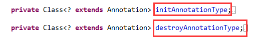
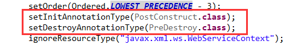
这样做的好处是，如果你看不上Java提供的这两个注解，完全可以自己定义两个，把它们替换掉，效果完全一样。
二、方法的描述
我们都能想到使用反射在一个类里面找出所有标有注解的方法，就是Method类型的一个对象。
Spring也是这样做的，但是它考虑的更加细节化。如下图0304：
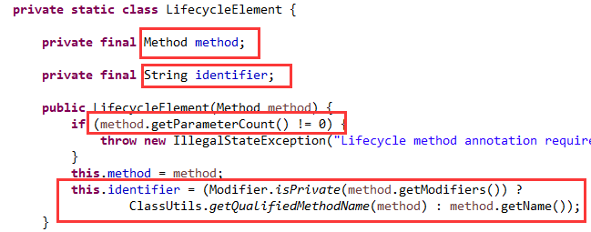
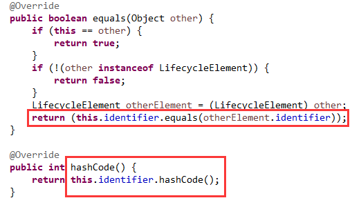
把Method保存起来不足为奇，而且还要求方法的参数个数必须为0，即没有参数。
还有一个String类型的identifier字段，这个单词是标识符的意思。
看到下面对它的赋值，如果是私有方法，则是方法的全名（包括类名），否则是方法的简单名（不包括类名）。
看到这里，一定会觉得很奇怪，先卖个关子，到后面再说明为什么。
还重写了hashCode和equals方法，也是依赖identifier字段来实现的。说明这个字段非常重要。
还说明可能会把这个类的对象作为Map的key使用，或往Set集合中添加，其实都是在比较两个对象是否相等。
三、类和方法的对应关系描述
其实我们需要知道的是每个类中的相应方法，所以要和类关联起来。如下图05：
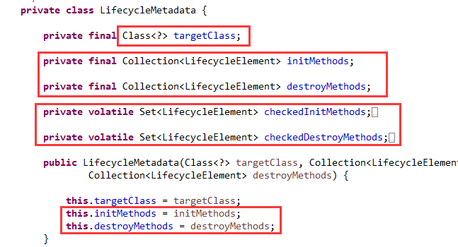
我们可以看到有两组字段表示初始化和销毁方法，一组是Collection类型，一组是Set类型。
Set类型是不能重复的，可以是无序的如HashSet，也可以是有序的如LinkedHashSet。
Collection类型是比较宽泛的接口，还可以有重复元素。
再看下构造方法，使用的是Collection类型，说明传进来的初始化或销毁方法存在重复或冗余，需要进行一些处理，然后变为Set类型，把冗余的过滤掉。
四、通过反射找出标有注解的方法
如下图06：
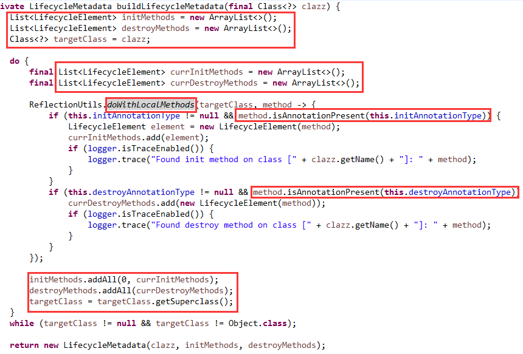
整体思路并不难，这里主要看几个细节问题。
这里提到了LocalMethods（即本地方法），指的是一个类自己声明的方法，还有它实现的接口里的默认方法。
就是从这些方法里找出标有初始化和销毁注解的方法。
然后再从这个类的父类里面按照相同的方式找出父类中的这些方法。接着再找父类的父类。
说明这里是支持继承的，如C继承B，B继承A，那么C、B、A中的注解方法都会被找出来。
这就是带来一个问题，即顺序该如何处理，是父类的在前还是子类的在前？
如果对面向对象比较熟悉的话，就会知道初始化属于类的构造，销毁属于类的析构。
可以再进一步，把构造看作是构造方法，把析构看作是析构方法。所以其实就是构造方法和析构方法的调用顺序了。
对于构造方法是父类的先执行，因为子类依赖父类，父类不构建好，子类无法构建。
对于析构方法是子类的先执行，同样是因为子类依赖父类，如果父类先销毁，子类的依赖就不存在了，它怎么可能存活。
可以看出调用顺序正好相反。可以把父类比作房子的一楼，子类比作房子的二楼，子类依赖父类，相当于二楼依赖一楼。
盖楼时先一楼再二楼，对应于构造方法的调用顺序。拆楼时先二楼再一楼，对应于析构方法的调用顺序。
因此，标有初始化注解的方法是父类的方法在前面，子类的方法在后面。标有销毁注解的方法正好倒过来，子类的在前，父类的在后。
构造方法和析构方法是不能被继承和重写的，但是标有注解的方法是可以被继承（只要不是private）或重写（只要不是private/final）的。
这就表明它们之间肯定会有些不同，上面提到的identifier字段，和依赖它实现hashCode和equals方法，就是为了解决这个问题的。
看下它的值，非常特殊：
对于私有方法，identifier字段的值就是方法全名，因为私有方法不能被继续和重写，子类里和父类里定义的同名私有方法，也是不同的两个方法。
所以它们不能互相覆盖，必须全部保留，因此用方法的全名，全名肯定是不同的，所以hashCode也不同。
对于非私有方法（一般是公共和受保护的），identifier字段的值就是方法的简单名，因为非私有方法可以被继续和重写。
子类里和父类里定义的同名非私有方法，虽然也是不同的两个方法，但是它们以反射的方式在子类对象上调用时产生的结果是一样的，都等同于调用子类上的方法。
所以此时只需保留一个就可以了，使用方法的简单名，因为是一样的，所以通过Set时就可以过滤掉一个，实际保留的是父类的，过滤掉的是子类的。
现在我们就明白了Spring设置identifier字段的真正用意了。
编程新说注：父类中的Method对象，可以在子类的实例上invoke，得到的结果就是子类重写方法后的结果。
五、对找出来的注解方法进行检查
如下图07：
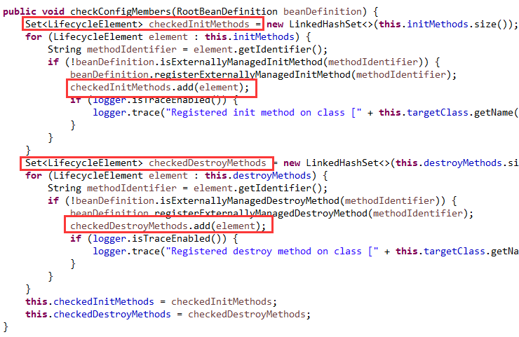
看到把这些方法逐个添加到Set里面，按照定义好的规则进行过滤。
最终的结果就是，私有同名方法都会被保留，非私有同名方法只会保留一个，由于顺序的原因，初始化方法保留的是父类中的，销毁方法保留的是子类中的。
六、通过反射来调用它们
当然，在框架开发中，使用反射来调用是很正常的事情。
如下图0809：
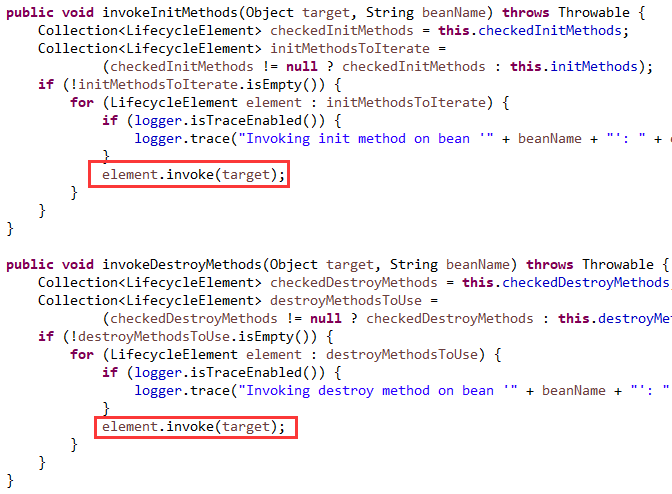
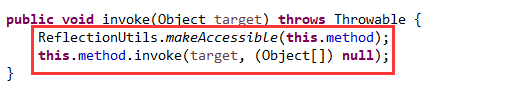
到目前为止，我们已经了解了Spring对初始化和销毁方法的处理逻辑。包括方法的表示，如何找出这些方法，方法的过滤去重与排序问题，以及方法的反射调用。
还有最后一个问题，就是这些处理要和bean后处理器的方法结合起来。
七、使用bean后处理器决定调用时机
共涉及到3个方法，
第一个，postProcessMergedBeanDefinition，如下图10：
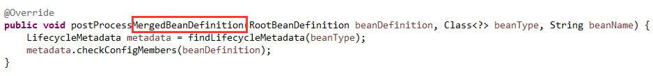
该方法虽然与合并后的bean定义相关，但却不是用来处理bean定义的。
它一般用来做一些自我检测的操作或准备和缓存一些相关的元数据的操作。
在这里就是把所有的初始化和销毁方法都找出来，整理好并缓存起来备用。其实这些就相当于元数据的处理。
第二个，postProcessBeforeInitialization，如下图11：
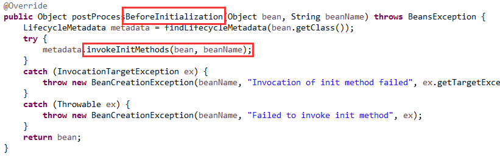
在这里完成对所有初始化方法的按顺序调用。
第三个，postProcessBeforeDestruction，如下图12：
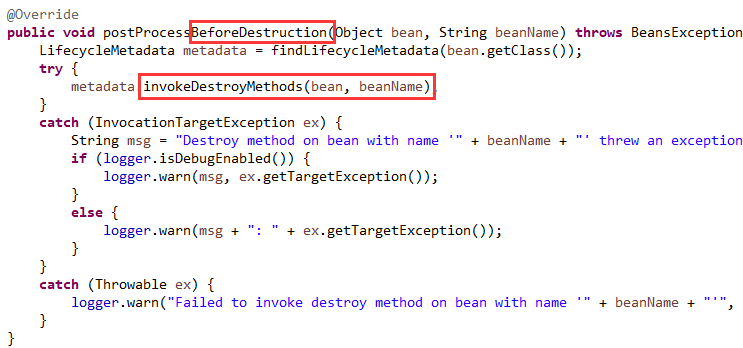
在这里完成对所有销毁方法的按顺序调用。
编程新说注：
本文介绍的都是@PostConstruct和@PreDestroy这两个注解标注的方法。
除此之外还有其它方式也可以指定初始化和销毁方法，上一篇文章中已写明。
你还发现，这两个注解可以标在多个方法上，还可以标在父类里，且不受访问控制符影响，因为私有方法也可以标。
而且当父类和子类中都有时，还知道了它们的调用顺序。
以上这些都是细节问题，即使看官方文档，都不会写的这么详细。这就是学习源码的好处。细节之处见真知。
最后用一句话共勉你我他：
很多事情，听是一回事，看是一回事，说是一回事，做则是另一回事。
>>> 品Spring系列文章 <<<
品Spring：SpringBoot和Spring到底有没有本质的不同？
品Spring：SpringBoot轻松取胜bean定义注册的“第一阶段”
品Spring：SpringBoot发起bean定义注册的“二次攻坚战”
品Spring：注解之王@Configuration和它的一众“小弟们”
>>> 热门文章集锦 <<<
爸爸又给Spring MVC生了个弟弟叫Spring WebFlux
【面试】吃透了这些Redis知识点，面试官一定觉得你很NB（干货 | 建议珍藏）
【面试】如果你这样回答“什么是线程安全”，面试官都会对你刮目相看（建议珍藏）
【面试】迄今为止把同步/异步/阻塞/非阻塞/BIO/NIO/AIO讲的这么清楚的好文章（快快珍藏）
【面试】一篇文章帮你彻底搞清楚“I/O多路复用”和“异步I/O”的前世今生（深度好文，建议珍藏）
作者是工作超过10年的码农，现在任架构师。喜欢研究技术，崇尚简单快乐。追求以通俗易懂的语言解说技术，希望所有的读者都能看懂并记住。下面是公众号和知识星球的二维码，欢迎关注！